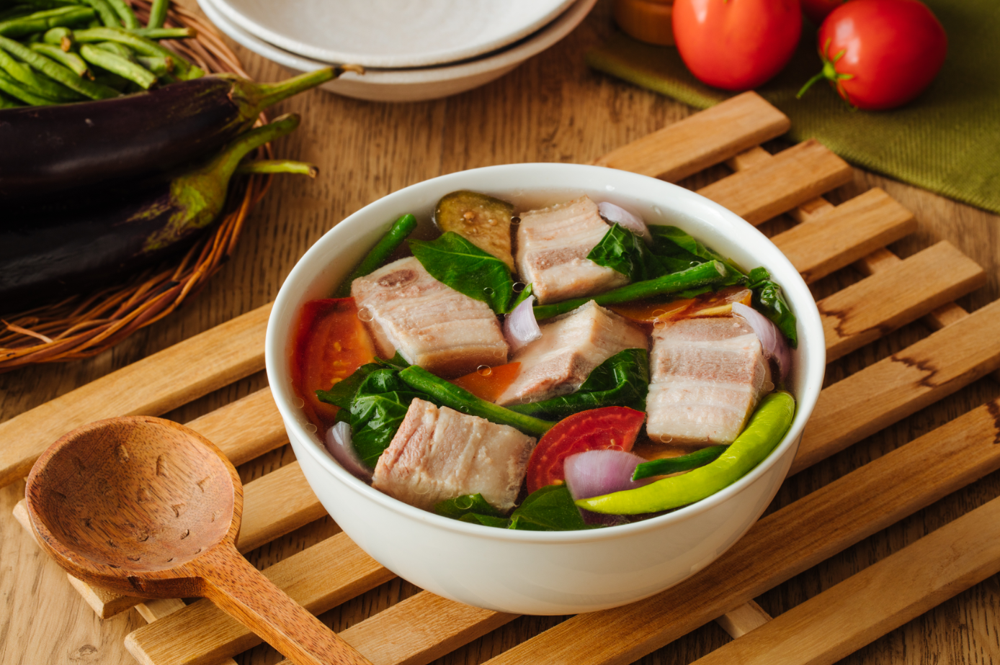

Sinigang Recipe

SInigang na Baboy
Chockful of crisp-tender vegetables and meaty ribs and thick with the sourness of tamarind, my steaming bowl of soup provided much-needed
comfort against the harsh weather outside. It was delicious, filling, and the perfect way to warm up!
Ingredients
- Pork-while you can use meatier and leaner parts such as pork shoulder (kasim)
- Onion-peeled and quartered
- Fish sauce-brings umami flavor
- Gabi
- Radish (labanos)
- Sitaw (long beans)
- Banana or finger chili peppers (siling haba)
Steps
- Rinse pork ribs and drain well.
- In a pot over medium heat, combine pork and enough water to cover. Bring to a boil, skimming scum that accumulates on top.
- Once broth clears, add tomatoes, onion, and fish sauce. Lower heat and simmer for about 1 to 1 1/2 hours or until meat is tender, adding more water as necessary to maintain about 8 cups.
- Add gabi and cook for about 4 to 6 minutes or until tender.
- Add chili peppers and radish. Continue to simmer for about 2 to 3 minutes.
- Add long beans. Continue to cook for about 2 minutes.
- Add eggplant and okra and cook for another 1 to 2 minutes.
- If using packaged tamarind base, add to the pot and stir until completely dissolved.
- Season with salt and pepper to taste.
- Add bok choy and continue to cook for about 1 minute. Serve hot.